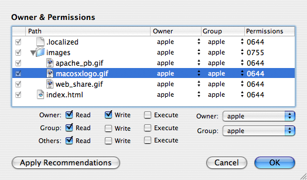

Setting file permissions
The permissions and ownership of files in your root are very important. Incorrect permissions can cause an install to fail or cause your install to mess up a user's system. When setting permissions, you should use the following guidelines:
- If it is an existing file/directory, particularly a system file/directory, the permissions and ownership in your root should match those found in a clean install of the OS*. For example,
/Applicationsin Tiger should be 775, root:admin. - If it is not an existing file and is a directory or executable, the permissions should be 775 with appropriate ownership and group for the install location.
- If it is not an existing file and is not a directory or executable, the permissions should be 664 with appropriate ownership and group for the install location.
Of course, specific cases may need different, specialized permissions. Make sure to test your install on a machine other than your own to confirm that incorrect ownership/permissions are not set on the target machine.
You can set the permissions by hand or by using the “Edit Permissions” button in the “Contents” tab of the PackageMaker user interface. With this interface, you can modify the ownership/permissions of files in your root one-at-a-time or multiple files at-a-time via multiple selection. The “Apply Recommendations” button will set the ownership and permission of all files in the root by following the guidelines listed above. Changing ownership or permissions will require you to authenticate as an administrator.
 The “Edit Permissions” sheet* To determine the ownership/permissions in a clean install, either run “Repair Permissions” in Disk Utility.app, which will restore the permissions on your machine, or find the file/directory in the output of:
lsbom -p MUGsf /Library/Receipts/BaseSystem.pkg/Contents/Archive.bom